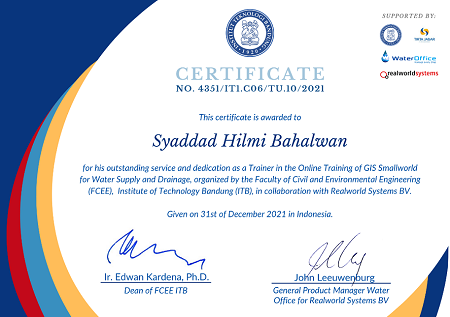

Experience
February 1st , 2018 – Present – PT. Realworldwide Wholesale Indonesia
App Developer and DB Admin
November 15th, 2013 – Januari 31st, 2018 – PT. Realworld Indonesia
Senior GIS Technical and Support Consultant
Dec 01st, 2002 -- November 14th, 2013 – PT. Artiduta Aneka Usaha Surabaya
GIS Programmer
Sept. 2001-April 2002 – PT. Abakus Informindo Systems Surabaya
Mapping Supervisor and Oracle 8i SDE Updating
May 2001 – PT. PLN (PERSERO) Cabang Dumai, Riau
Mapping Trainer
March 2001 – PT. PLN (PERSERO) Cabang Pekanbaru, Riau
Mapping Trainer
2001 – PT. PLN (PERSERO) Rayon Darmo Permai, Surabaya
Mapping Developer
1999-2000 – PT. PLN (PERSERO) Ranting Sepanjang, Surabaya
Mapping Developer, Windows 98 Programming Trainer and LAN Instalations
August 1999 – PT. TELKOM Divisi Regional V Jawa Timur Unit Bisnis Internet
Kerja Praktek
Honor and Awards:
